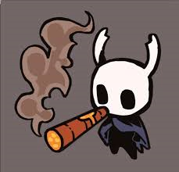
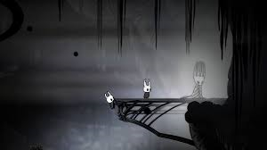
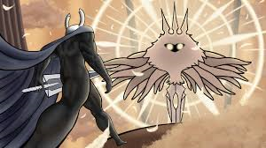

Lore
El Caballero es un Vaso descartado .Son el hijo del Rey Pálido y la Dama Blanca ,nacidos en el Abismo con el Vacío dentro de su caparazón.Hornet es la hermana del Caballero a través de su padre compartido. Al igual que el resto de sus hermanos Vaso, el Caballero no tiene género.

Después de salir de su lugar de nacimiento en el Abismo, el Caballero fue testigo de cómo su hermano, el Caballero Hueco , era sacado del Abismo por el Rey Pálido. La entrada al Abismo estaba sellada, lo que provocó que el Caballero volviera a caer. Algún tiempo después de esto, a pesar de que la entrada estaba sellada, el Caballero y algunos de sus hermanos lograron escapar del Abismo.

AFinalmente, el Caballero terminó vagando fuera de Hallownest por razones desconocidas. Pasar tiempo en esta área hizo que el Caballero perdiera sus recuerdos, pero estar allí le dio cierta resistencia. Regresaron a Hallownest después de que recibieran una llamada de Radiance o de Hollow Knight.
